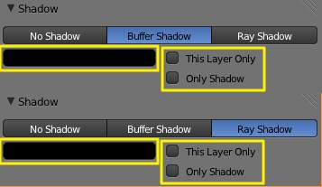
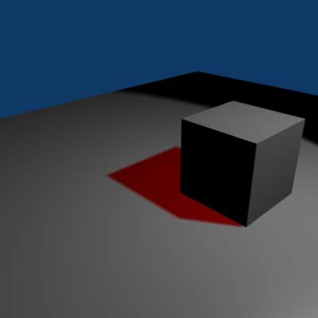
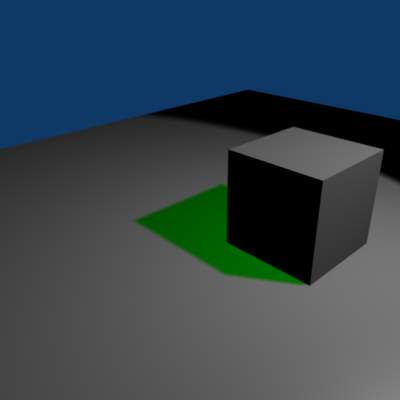
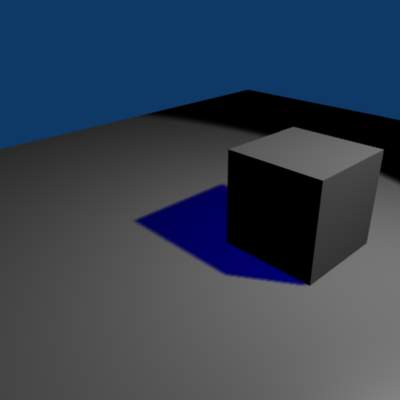

Common Shadowing Lamps Options¶

{kind=link}
Common shadowing options for lamps.
All lamps able to cast shadows (Lamp, Spot, Area, and Sun) share some options, described below:
- This Layer Only
- When this option is enabled, only the objects on the same layer as the light source will cast shadows.
- Only Shadow
- The light source will not illuminate an object but will generate the shadows that would normally appear. This feature is often used to control how and where shadows fall by having a light which illuminates but has no shadow, combined with a second light which doesn’t illuminate but has Only Shadow enabled, allowing the user to control shadow placement by moving the “Shadow Only” light around.
- Shadow color
This color picker control allows you to choose the color of your cast shadows (black by default). The images below were all rendered with a white light and the shadow color was selected independently.
Red colored shadow example.
Green colored shadow example.
Blue colored shadow example.
Although you can select a pure white color for a shadow color, it appears to make a shadow disappear.
{kind=link}
{kind=link}
{kind=link}